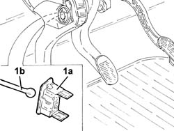
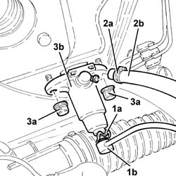
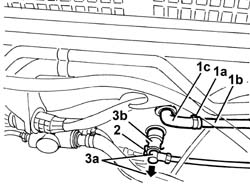
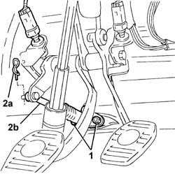
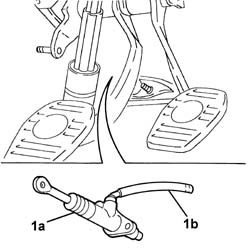

1820B20 (Pump) - MASTER CYLINDER R.R.
- Path
- Procedures > 18 CLUTCH > 1820 CLUTCH RELEASE CONTROLS > 1820B HYDRAULIC CLUTCH SYSTEM > 1820B20 (Pump) - MASTER CYLINDER R.R.
- Kind
- repair procedure (removal / refitting; the operation number is the code)
- Applies to
- all engines; all production periods
- Interactive page
- https://sloeber94.github.io/elrnDB-a147/en/#/3025110
Applies to: all engines; all production periods
 Removing
Removing
 Refitting
RefittingPosition the vehicle on the ramp.
Proceed with the removal 5530B10 battery - r+r .
Proceed with the removal 5530B52 Battery DRIP TRAY/SUPPORT - R.R. .
Proceed with the removal 3340A12 A'B.S. system. - electronic and hydraulic CONTROL UNIT R.R. .
Proceed with the removal 3340A13 abs central mount - r r .
Proceed with the removal 3330D02 brake servo/brake pump assembly - r r .
1. Remove the clip (1a) and release the push rod (1b) for the master cylinder from the clutch pedal.

Applies to: all engines; all production periods
1. Remove the split pin (1a) and disconnect the rigid supply pipe from the master cylinder (1b).
2. Loosen the band (2a) and disconnect the flexible pipe from the clutch reservoir to the master cylinder (2b), master cylinder side.
3. Undo the nuts (3a) and remove the master cylinder (3b).

Applies to: all engines; all production periods
Refitting
RemovingPlace the clutch master cylinder back in its housing and fix it tightening the nuts to the recommended torque.
 | Fastening | Component | Ø | Value (daNm) |
|---|---|---|---|---|
- | Nut | CLUTCH FLUID MASTER CYLINDER | M8 | 1.8 ÷ 2.4 |
Connect the flexible pipe from the clutch reservoir to the master cylinder, master cylinder side and secure it using the band.
Connect the rigid supply pipe from the master cylinder, master cylinder side and secure it using the split pin.
Connect the master cylinder push rod to the clutch pedal and secure it using the clip.
Proceed with the refitting 3330D02 brake servo/brake pump assembly - r r .
Proceed with the refitting 3340A13 abs central mount - r r .
Proceed with the refitting 3340A12 A'B.S. system. - electronic and hydraulic CONTROL UNIT R.R. .
Bleed the air and top up the level of the hydraulic clutch release system 1820B08 Clutch release HYDRAULIC SYSTEM - Bleeding air and restoring level .
Proceed with the refitting 5530B52 Battery DRIP TRAY/SUPPORT - R.R. .
Proceed with the refitting 5530B10 battery - r+r .
Bleed the air from the braking system 3330A14 HYDRAULIC BRAKING SYSTEM - Bleed air .
Remove the car from the ramp.
Applies to: all engines; all production periods; only with equipment: Guida a destra
Removing
Refitting1072B50 sleeves connecting air capacity box to inlet manifold is - r+r (1.6 engine)
1072D10 modular inlet manifold - r+r (2.0 engine)
1. Working in the space created by the removed parts, loosen the band (1a) and disconnect the flexible pipe (1b) from the oil reservoir pipe (1c).
2. Undo the retaining clip.
3. Disconnect the supply pipe connector (3a) from the master cylinder (3b).

Applies to: all engines; all production periods; only with equipment: Guida a destra
1. Working in the pedal area, undo the nuts securing the master cylinder.
2. Remove the split pin (2a) and disconnect the master cylinder (2b) from the clutch pedal.

Applies to: all engines; all production periods; only with equipment: Guida a destra
1. Remove the master cylinder (1a) complete with pipe (1b).

Applies to: all engines; all production periods; only with equipment: Guida a destra
Refitting
RemovingCheck that the master cylinder is not damaged.
Fit the master cylinder in its seating with the pipe.
Connect the master cylinder to the clutch pedal and secure it with its split pin.
Tighten the nuts fixing the master cylinder.
| Fastening | Component | Ø | Value (daNm) |
|---|---|---|---|---|
- | Nut | CLUTCH FLUID MASTER CYLINDER | M8 | 1.8 ÷ 2.4 |
Working in the engine compartment, connect the connector of the supply pipe to the master cylinder, then engage the retaining clip.
Connect the flexible pipe to the oil reservoir and secure it with the band.
1072D10 modular inlet manifold - r+r (2.0 engine)
1072B50 sleeves connecting air capacity box to inlet manifold is - r+r (1.6 engine)
Bleed the air and top up the level of the hydraulic clutch release system 1820B08 Clutch release HYDRAULIC SYSTEM - Bleeding air and restoring level .
Topics linked from this page (9)
- 1072B50 sleeves connecting air capacity box to inlet manifold is - r+r
- 1072D10 modular inlet manifold - r+r
- 1820B08 Clutch release HYDRAULIC SYSTEM - Bleeding air and restoring level
- 3330A14 HYDRAULIC BRAKING SYSTEM - Bleed air
- 3330D02 brake servo/brake pump assembly - r r
- 3340A12 A'B.S. system. - electronic and hydraulic CONTROL UNIT R.R.
- 3340A13 abs central mount - r r
- 5530B10 battery - r+r
- 5530B52 Battery DRIP TRAY/SUPPORT - R.R.